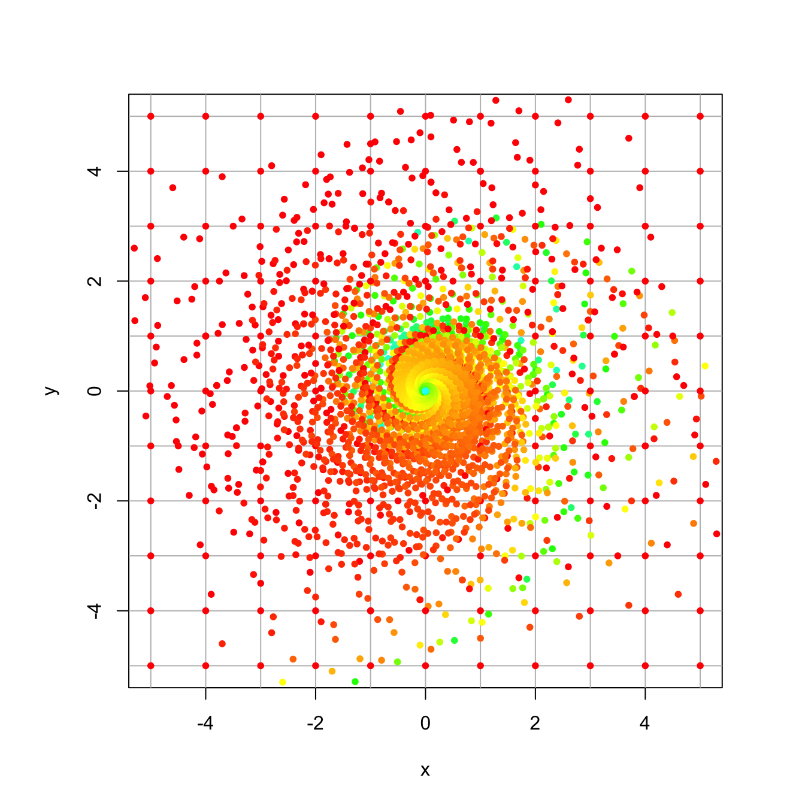

Section 20 Eigenvectors
20.1 Computing Eigenvectors and Eigenvalues
To compute eigenvalues and eigenvectors in R we use the eigen command. For example if our matrix is
## [,1] [,2] [,3]
## [1,] -14 13 -2
## [2,] -20 19 -2
## [3,] -23 19 1Then we compute its eigenvalues and eigenvectors as
## eigen() decomposition
## $values
## [1] 6 3 -3
##
## $vectors
## [,1] [,2] [,3]
## [1,] -0.2672612 -0.4082483 0.5773503
## [2,] -0.5345225 -0.4082483 0.5773503
## [3,] -0.8017837 0.8164966 0.5773503One thing to notice about the eigenvectors is that they are scaled to have length one (they are unit vectors). So they often do not look like what we expect. Note for example that the first vector above is a multiple of \((1,2,3)^T\), the second is a multiple of \((-1,-1,2)^T\) and the third is a multiple of \((1,1,1)^T\).
We can extract the eigenvectors and eigenvalues as follows
Then, for example, we can see if a vector is an eigenvector as follows. Here I will check the first eigenvalue and first eigenvector:
## [,1]
## [1,] -1.603567
## [2,] -3.207135
## [3,] -4.810702## [1] -1.603567 -3.207135 -4.810702From this, we see that \(A v_1 = \lambda_1 v_1\).
Recall that every scalar multiple of an eigenvector is also an eigenvector of that same eigenvalue. The vectors are currently scaled to have length 1. Another useful scaling is to have them sum to 1. You can accomplish this by dividing them by the sum of their entries. For example,
## [1] 0.1666667 0.3333333 0.500000020.2 Diagonalization
In class we diagonalized a few matrices. Here we show how to do this in R.
- Here is the first matrix from the checkpoint question CP-5.3.
## [,1] [,2] [,3]
## [1,] -5 6 -2
## [2,] -6 7 -2
## [3,] -7 8 -2## [1] 1.000000e+00 -1.000000e+00 -3.766534e-15## [,1] [,2] [,3]
## [1,] -0.2672612 0.5773503 -0.6666667
## [2,] -0.5345225 0.5773503 -0.6666667
## [3,] -0.8017837 0.5773503 -0.3333333## [,1] [,2] [,3]
## [1,] 1.000000e+00 3.355686e-15 -6.554309e-16
## [2,] 6.661338e-15 -1.000000e+00 8.881784e-15
## [3,] 4.272762e-15 -3.076740e-15 1.776357e-15Here, we are diagonalizing \(A\) by multiplying \(P^{-1} A P = D\) where \(P\) is the matrix of eigenvectors and \(D\) is the diagonal matrix of eigenvalues.
We can use zapsmall to round or “zap†very small numbers to 0, and it then looks more like what we are expecting.
## [,1] [,2] [,3]
## [1,] 1 0 0
## [2,] 0 -1 0
## [3,] 0 0 0- Now we diagonalize the second matrix from CP-5.3 You will recall that this one has a repeated eigenvalue (algebraic multiplicity 2), but it has a 2-dimensional eigenspace (geometric multiplicity 2), so it is digonalizable.
## eigen() decomposition
## $values
## [1] 4 4 -2
##
## $vectors
## [,1] [,2] [,3]
## [1,] 0.9128709 0.0000000 -0.4082483
## [2,] -0.1825742 0.8944272 -0.4082483
## [3,] 0.3651484 0.4472136 0.8164966## [,1] [,2] [,3]
## [1,] 4 0 0
## [2,] 0 4 0
## [3,] 0 0 -2- The third matrix from CP-5.3 is not diagonalizable. It has an eigenvalue of algebraic multiplicity 2 and geometric multiplicity 1. Note that it gives the same two eigenvectors for \(v_2\) and \(v_3\), because the eigenspace \(E_2\) is only 1 dimensional.
## eigen() decomposition
## $values
## [1] 3 2 2
##
## $vectors
## [,1] [,2] [,3]
## [1,] 0.8017837 0.5773503 0.5773503
## [2,] -0.2672612 -0.5773503 -0.5773503
## [3,] 0.5345225 0.5773503 0.577350320.3 Rental Car Example
In problem PS 3.8, you studied a transition matrix for where cars got returned if they are rented from one of three rental locations: St. Paul, Rochester, and Duluth. Note that the columns of this matrix are probablilities, and as such, the are nonnegative and sum to 1. Such a matrix is called a Markov or stochastic matrix.
StP = c(.85,.09,.06)
Roch = c(.30,.60,.10)
Dul = c(.35,.05,.60)
M = cbind(StP,Roch,Dul)
rownames(M) <- c("StP","Roch","Dul")
M## StP Roch Dul
## StP 0.85 0.3 0.35
## Roch 0.09 0.6 0.05
## Dul 0.06 0.1 0.60In this assignment you imagined that there were 20 cars at each location, i.e., v = cbind(20,20,20) and you applied the matrix over and over again to this vector watching it converge to a steady state.
## [,1]
## StP 40.969163
## Roch 10.308370
## Dul 8.722467Stochastic matrices always have eigenvalue \(\lambda = 1\). As can be seen here:
## eigen() decomposition
## $values
## [1] 1.000+0.000000i 0.525+0.037081i 0.525-0.037081i
##
## $vectors
## [,1] [,2] [,3]
## [1,] 0.9497414+0i 0.6201737+0.0000000i 0.6201737+0.0000000i
## [2,] 0.2389672+0i -0.3100868-0.4599331i -0.3100868+0.4599331i
## [3,] 0.2022030+0i -0.3100868+0.4599331i -0.3100868-0.4599331iNote that the first eigenvalue is 1, and that the second and third eigenvalues (and eigenvectors) are complex and have both real and imaginary parts. If some of the eigenvalues have imaginary parts, then it outputs them all in complex form.
Here we extract just the real part of the first eigenvector (since its imaginary part is 0), and we rescale it both to sum to 1 and to sum to 60.
## [1] 0.6828194 0.1718062 0.1453744## [1] 40.969163 10.308370 8.722467Notice that this is the exact same as the steady-state vector that we got by iterating. The steady-state that this system wants to be in — with 40.97 cars in St. Paul, 10.31 cars in Rochester, and 8.72 cars in Duluth. It makes sense that a steady-state vector is an eigenvector with eigenvalue \(\lambda = 1\). That the system converges to this state is eigen-magic that we will learn about soon.
20.4 Northern Spotted Owl
This is the opening example in Chapter 5 of the textbook on page 265. It comes from a 1992 study of the northern spotted owl, which was threatened with extinction due to the loss of forest habitat due to logging in the Pacific Northwest. This is currently a story featured in an NPR Podcast called Timber Wars.
20.4.1 The Dynamical System
The vector \[ x_n = \begin{bmatrix} j_n \\ s_n \\ a_n \end{bmatrix} \] is an age-stage vector in which \(j_n, s_n\), and \(a_n\) are the number of female owls in the juvenile (up to 1 year), subadult (1-2 year), and adult (over 2 year) age groups in year \(n\).
The dynamics that take us from one year to the next is given by, the recursive relation \(x_{n+1} = A x+n\), where \(A\) is the matrix shown here. This is an age-stage matrix model that was published in Conservation Biology. \[ \begin{bmatrix} j_{n+1} \\ s_{n+1} \\ a_{n+1} \end{bmatrix} = \begin{bmatrix} 0 & 0 & 0.33 \\ 0.18 & 0 & 0 \\ 0 & 0.71 & 0.94 \end{bmatrix} \begin{bmatrix} j_n \\ s_n \\ a_n \end{bmatrix} \] If we multiply this system out, we get \[ \begin{array} {rcl} j_{n+1} &=& 0.33 a_n \\ s_{n+1} &=& 0.18 j_n \\ a_{n+1} &=& 0.71 s_n + 0.94 a_n \end{array} \] We see that, in this model, 0.33 represents the fertility or fecundity rate. That is, it is the proportion of new juveniles next year to adults this year (the proportion of offspring the adult population is producing). The 0.18 is the survival rate from juvenile to subadult, 0.71 is the survival rate from subadult to adult, and 0.94 proportion of adults that survive from one year to the next.
To see the dynamics play out over time, we will start with an original population of owls is distributed into age groups as follows. \[ x_0 = \begin{bmatrix} 100 \\ 76 \\ 502 \end{bmatrix} \] We will write a loop to apply the matrix \(A\) over and over again. This time we will make a table and store each value in the table.
A = cbind(c(0,0.18,0),c(0,0,.71),c(0.33,0,0.94)) # the population dynamics matrix
x0 = c(100,76,502) # the inital value
N = 10 # iterate N=10 times
X = matrix(0,nrow=nrow(A),ncol=N+1) # initialize an all 0 matrix to store values in
X[,1] = x0 # the first column is the initial population
for (i in 2:(N+1)) { # loopn from 2 to N+1
X[,i] = A %*% X[,i-1] # Apply A to column i-1 and put the value in column i
}
X # display the table## [,1] [,2] [,3] [,4] [,5] [,6] [,7] [,8] [,9]
## [1,] 100 165.66 173.5272 167.3330 164.27953 161.74110 159.0937 156.47643 153.90912
## [2,] 76 18.00 29.8188 31.2349 30.11993 29.57032 29.1134 28.63687 28.16576
## [3,] 502 525.84 507.0696 497.8168 490.12454 482.10222 474.1710 466.39127 458.73997
## [,10] [,11]
## [1,] 151.38419 148.90038
## [2,] 27.70364 27.24915
## [3,] 451.21326 443.81005Having saved the information, we can now plot the data, Note that it appears to support the claim the claim that the owls are threatened with extinction.
tot = X[1,] + X[2,] + X[3,]
t = seq(1,N+1)
plot(t,X[1,],type='l',col='blue',ylim=c(0,1000),ylab="population",xlab="year",main="Spotted Owl Population")
points(t,X[1,],col='blue',pch=20,cex=.8)
lines(t,X[2,],col='orange')
points(t,X[2,],col='orange',pch=20,cex=.8)
lines(t,X[3,],col='red')
points(t,X[3,],col='red',pch=20,cex=.8)
points(t,tot,col='black',pch=20,cex=.8)
lines(t,tot,col='black')
legend(8, 1050, legend=c("juvenile", "subadults", "adults","total"), col=c('blue','orange','red','black'), lty=1) Let’s run the iteration further. This time, we won’t display the table (gets too big), and we will just show the plot of 100 iterations
A = cbind(c(0,0.18,0),c(0,0,.71),c(0.33,0,0.94)) # the population dynamics matrix
x0 = c(100,76,502) # the inital value
N = 100 # iterate N=10 times
X = matrix(0,nrow=nrow(A),ncol=N+1) # initialize an all 0 matrix to store values in
X[,1] = x0 # the first column is the initial population
for (i in 2:(N+1)) { # loopn from 2 to N+1
X[,i] = A %*% X[,i-1] # Apply A to column i-1 and put the value in column i
}
tot = X[1,] + X[2,] + X[3,]
t = seq(1,N+1)
plot(t,X[1,],type='l',col='blue',ylim=c(0,1000),ylab="population",xlab="year",main="Spotted Owl Population")
points(t,X[1,],col='blue',pch=20,cex=.8)
lines(t,X[2,],col='orange')
points(t,X[2,],col='orange',pch=20,cex=.8)
lines(t,X[3,],col='red')
points(t,X[3,],col='red',pch=20,cex=.8)
points(t,tot,col='black',pch=20,cex=.8)
lines(t,tot,col='black')
legend(8, 1050, legend=c("juvenile", "subadults", "adults","total"), col=c('blue','orange','red','black'), lty=1)
They do seem to be dying out.
20.4.2 Eigenanalysis
Now we check the eigenvectors and eigenvalues to see if they help us understand what is going on.
## eigen() decomposition
## $values
## [1] 0.9835927+0.0000000i -0.0217964+0.2059185i -0.0217964-0.2059185i
##
## $vectors
## [,1] [,2] [,3]
## [1,] 0.31754239+0i 0.6820937+0.0000000i 0.6820937+0.0000000i
## [2,] 0.05811107+0i -0.0624124-0.5896338i -0.0624124+0.5896338i
## [3,] 0.94646180+0i -0.0450520+0.4256233i -0.0450520-0.4256233iThe first eigenvalue is \(\lambda_1 = 0.98\), and the other two are complex. R always lists the eigenvalues from largest to smallest, so in this case the largets eigenvalue is less than one. That means that in that direction, the population is dying off by 2% each year.
If we extract the corresponding eigenvector, and scale it to sum to 1, we get
v1 = eigen(A)$vectors[,1] # get the first eigenvector
v1 = Re(v1) # drop the imaginary part
v1/sum(v1) # scale it to sum to 1## [1] 0.24017754 0.04395311 0.71586935What this is telling us that as the population dies off, it does so in this eigenvector direction with 24.0% of the population being juveniles, 4.4% subadults, and 71.5% adults.
The owls were going extinct because of the logging in the Pacific Northwest. Suppose that we make the case that by stopping logging we will increase the survival rate from juvenile to subadult from 0.18 to 0.26 (by improving the habititat the juvinile owls have a better chance of surviving the first year). In this case, the eigenvalues and eigenvectors becomes:
## eigen() decomposition
## $values
## [1] 1.0008184+0.0000000i -0.0304092+0.2448335i -0.0304092-0.2448335i
##
## $vectors
## [,1] [,2] [,3]
## [1,] 0.3121152+0i -0.0754384+0.6073766i -0.0754384-0.6073766i
## [2,] 0.0810836+0i 0.6450012+0.0000000i 0.6450012+0.0000000i
## [3,] 0.9465778+0i -0.4436732-0.1119384i -0.4436732+0.1119384iNotice that the largest eigenvalue now becomes 1. And if we iterate, we see that the population does not die off (it even grows slightly).

Finally, we go back to the original system, which is dying out, but start with a totally different age distribution. You can see the non-dominant eigevectors dying out quickly at the beginning and the dominant eigenvector, of eigenvalue 0.98, taking over.
A = cbind(c(0,0.18,0),c(0,0,.71),c(0.33,0,0.94)) # the population dynamics matrix
x0 = c(70,600,8) # the inital value
N = 20 # iterate N=100 times
X = matrix(0,nrow=nrow(A),ncol=N+1) # initialize an all 0 matrix to store values in
X[,1] = x0 # the first column is the initial population
for (i in 2:(N+1)) { # loopn from 2 to N+1
X[,i] = A %*% X[,i-1] # Apply A to column i-1 and put the value in column i
}
tot = X[1,] + X[2,] + X[3,]t = seq(1,N+1)
plot(t,X[1,],type='l',col='blue',ylim=c(0,1000),ylab="population",xlab="year",main="Spotted Owl Population")
points(t,X[1,],col='blue',pch=20,cex=.8)
lines(t,X[2,],col='orange')
points(t,X[2,],col='orange',pch=20,cex=.8)
lines(t,X[3,],col='red')
points(t,X[3,],col='red',pch=20,cex=.8)
points(t,tot,col='black',pch=20,cex=.8)
lines(t,tot,col='black')
legend(8, 1050, legend=c("juvenile", "subadults", "adults","total"), col=c('blue','orange','red','black'), lty=1)
s